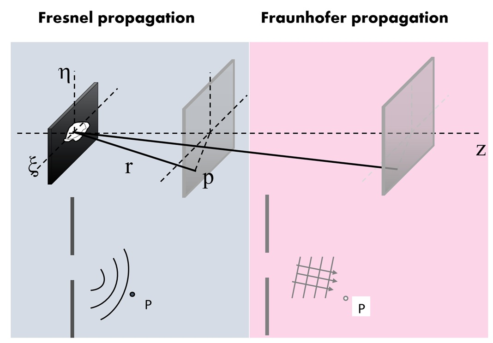

Wave propagation: Fresnel and Fraunhofer diffraction#

1. 좌표계와 기본 개념#
파동의 자유공간 전파를 생각한다. 개구면(aperture plane)을 \(z=0\) 평면으로 두고, 그 위의 좌표를
라고 하자. 관측면(observation plane)은 개구면으로부터 \(z\)만큼 떨어진 평면이며, 그 위의 좌표를
라고 둔다.
개구면 직후의 복소수 진폭을
라고 하고, 거리 \(z\)만큼 전파한 뒤 점 \(P\) 에서의 복소수 진폭을
라고 쓴다.
스칼라로 표시한 파수는 \(k=\frac{2\pi}{\lambda}\) 이다. 여기서 \(\lambda\)는 파장이다.
개구면 위의 한 점 \((\xi,\eta,0)\)에서 관측점 \(P(x,y,z)\)까지의 거리는
이다.
Huygens의 원리에 따르면, 개구면 위의 각 점은 2차 구면파를 방출하는 점광원처럼 작용한다. 따라서 관측면의 장은 개구면 위 모든 점에서 나온 구면파들의 중첩으로 주어진다.
다만 다음과 같이 구분해서 이해하는 것이 정확하다.
가까운 거리에서는 각 점광원에서 나온 구면파들의 위상 차이를 그대로 고려해야 한다. 이 영역이 Fresnel diffraction 영역이다.
충분히 먼 거리에서는 점광원이 이루는 파면을 평면파로 보고, 각 점광원들이 형성하는 평면파들이 관측 방향별로 위상 변화가 거의 선형적으로 정리된다. 이 영역이 Fraunhofer diffraction 영역이다.
# 1절: 수치 격자, 개구면 장, 물리 상수
import numpy as np
import matplotlib.pyplot as plt
wavelength = 633e-9 # 파장 [m]
k = 2 * np.pi / wavelength # 파수 [rad/m]
N = 512 # 각 차원의 격자 샘플 수
L = 5.0e-3 # 개구면 창의 한 변 길이 [m]
dx = L / N # 개구면 샘플 간격 [m]
aperture_axis = (np.arange(N) - N // 2) * dx
XI, ETA = np.meshgrid(aperture_axis, aperture_axis, indexing="xy")
# 입력 장의 예: 약한 가우스형 위상 물체를 가진 정사각형 개구.
aperture_width = 0.2e-3
u0 = ((np.abs(XI) <= aperture_width / 2) & (np.abs(ETA) <= aperture_width / 2)).astype(complex)
phase_object = np.exp(1j * 0.8 * np.exp(-(XI**2 + ETA**2) / (0.18e-3)**2))
u0 *= phase_object
print(f"격자: {N} x {N}, dx = {dx:.3e} m")
print(f"파장 = {wavelength:.3e} m")
print(f"개구 내부의 0이 아닌 샘플 수 = {np.count_nonzero(np.abs(u0) > 0)}")
fig, ax = plt.subplots(figsize=(4, 3.5))
im = ax.imshow(
np.abs(u0),
extent=[aperture_axis[0] * 1e3, aperture_axis[-1] * 1e3, aperture_axis[0] * 1e3, aperture_axis[-1] * 1e3],
cmap="gray",
)
ax.set_xlabel("x [mm]")
ax.set_ylabel("y [mm]")
ax.set_title("Aperture amplitude |u0|")
fig.colorbar(im, ax=ax, label="amplitude")
fig.tight_layout()
2. Huygens-Kirchhoff integral#
개구면 이전의 파동 형성 과정은 고려하지 않고, 개구면 직후의 복소수 진폭 \(u_0(\xi,\eta)\)가 주어졌다고 하자.
Huygens-Kirchhoff diffraction integral의 한 형태는 다음과 같이 쓸 수 있다.
여기서 \(\theta\)는 개구면의 법선 방향과 관측 방향이 이루는 각도이다. 또한
이므로 위 식은
로 쓸 수 있다.
경사인자(obliquity factor)를
라고 두면,
paraxial approximation, 즉 관측각 \(\theta\)가 충분히 작은 경우에는
이므로
이다. 따라서
또한 진폭 항에 들어 있는 \(r\)은 위상항 \(e^{ikr}\)에 비해 변화가 느리므로
로 둘 수 있다. 그러면
여기서 중요한 점은 다음과 같다.
진폭에 해당하는 분모의 \(r\)은 \(z\)로 근사할 수 있지만, 지수함수 안에 있는 \(r\)은 함부로 \(z\)로 바꾸면 안 된다. 왜냐하면 광학에서는 \(k=2\pi/\lambda\)가 매우 크기 때문에, 아주 작은 거리 차이도 큰 위상 차이를 만들 수 있기 때문이다.
3. 거리 \(r\)의 Taylor expansion#
이제 지수함수 안에 있는
를 근사해 보자.
먼저
로 쓸 수 있다.
여기서
를 사용하면,
따라서
가 된다.
주의할 점은, 단순히 Taylor expansion의 뒤쪽 항이 작아 보인다고 해서 바로 버릴 수 있는 것은 아니라는 점이다. 실제로 버려지는 항이 만드는 위상 오차
가 충분히 작아야 Fresnel approximation이 성립한다.
이 근사를 Huygens-Kirchhoff integral에 대입하면,
따라서
\(k=2\pi/\lambda\)이므로,
이다. 따라서 Fresnel diffraction integral은
또는
를 이용하여
라고 써도 같은 식이다.
4. Fresnel diffraction integral의 Fourier transform 형태#
이제 지수항 안의 제곱을 전개한다.
따라서
여기서 \(x\)와 \(y\)만 포함하는 항은 적분 변수 \(\xi,\eta\)와 무관하므로 적분 밖으로 꺼낼 수 있다.
이 식이 Fresnel diffraction integral의 중요한 형태이다.
임의의 함수 \(g(\xi,\eta)\)의 Fourier transform을 다음과 같이 정의하자.
그러면 Fresnel diffraction은
의 Fourier transform으로 볼 수 있다. 이때 Fourier transform의 spatial frequency는
이다.
따라서 Fresnel diffraction은 단순한 Fourier transform이 아니라,
에 2차 위상항(chirp phase)
을 곱한 뒤 Fourier transform한 형태이다.
# 4절: Fresnel 회절의 Fourier 변환 형태
# 이 셀에는 Fresnel의 Fourier 형태 전파에 필요한 보조 함수를 모아 두었다.
def fft2c(field):
"""표시용 배열에 맞춘 광학 관례의 중심화 2차원 FFT."""
return np.fft.fftshift(np.fft.fft2(np.fft.ifftshift(field)))
def fresnel_fourier_form(u0, dx, z, wavelength):
"""Fresnel 회절 적분을 Fourier 변환 형태로 계산한다.
샘플링된 Fourier 주파수 (fx, fy) は、x = wavelength * z * fx および
y = wavelength * z * fy によって물리적인 관측 좌표로 변환된다.
"""
n_y, n_x = u0.shape
if n_x != n_y:
raise ValueError("이 교육 예제에서는 정사각형 입력 배열을 가정합니다.")
aperture_axis = (np.arange(n_x) - n_x // 2) * dx
XI, ETA = np.meshgrid(aperture_axis, aperture_axis, indexing="xy")
frequencies = np.fft.fftshift(np.fft.fftfreq(n_x, d=dx))
observation_axis = wavelength * z * frequencies
X, Y = np.meshgrid(observation_axis, observation_axis, indexing="xy")
k = 2 * np.pi / wavelength
input_chirp = np.exp(1j * np.pi * (XI**2 + ETA**2) / (wavelength * z))
output_chirp = np.exp(1j * np.pi * (X**2 + Y**2) / (wavelength * z))
prefactor = np.exp(1j * k * z) / (1j * wavelength * z)
spectrum = fft2c(u0 * input_chirp) * dx**2
propagated_field = prefactor * output_chirp * spectrum
return propagated_field, observation_axis
z_fresnel = 0.25
u_fresnel, x_fresnel = fresnel_fourier_form(u0, dx, z_fresnel, wavelength)
I_fresnel = np.abs(u_fresnel)**2
I_fresnel /= I_fresnel.max()
print(f"Fresnel 전파 거리 z = {z_fresnel:.3f} m")
print(f"Fresnel 관측 창 = {x_fresnel[0]*1e3:.2f} 부터 {x_fresnel[-1]*1e3:.2f} mm")
print(f"Fresnel 정규화 강도: min = {I_fresnel.min():.3e}, max = {I_fresnel.max():.3f}")
print("Fresnel 중심선 샘플:", np.array2string(I_fresnel[N // 2, N // 2 - 3:N // 2 + 4], precision=3))
fig, axes = plt.subplots(1, 2, figsize=(8, 3.4))
im = axes[0].imshow(
I_fresnel,
extent=[x_fresnel[0] * 1e3, x_fresnel[-1] * 1e3, x_fresnel[0] * 1e3, x_fresnel[-1] * 1e3],
cmap="magma",
)
axes[0].set_xlabel("x [mm]")
axes[0].set_ylabel("y [mm]")
axes[0].set_title(f"Fresnel intensity, z={z_fresnel:.2f} m")
fig.colorbar(im, ax=axes[0], label="normalized intensity")
center = I_fresnel.shape[0] // 2
axes[1].plot(x_fresnel * 1e3, I_fresnel[center])
axes[1].set_xlim(-5, 5)
axes[1].set_xlabel("x [mm]")
axes[1].set_ylabel("normalized intensity")
axes[1].set_title("center line")
axes[1].grid(True)
fig.tight_layout()
5. Fraunhofer diffraction#
Fraunhofer diffraction은 Fresnel diffraction에서 한 단계 더 근사한 것이다.
Fresnel integral 안에는 다음과 같은 개구면 쪽 2차 위상항이 있다.
Fraunhofer approximation에서는 이 항의 위상 변화가 개구면 전체에서 충분히 작다고 가정한다.
즉,
이면
로 둘 수 있다.
개구의 대표적인 크기를 \(D\)라고 하면, 대략적으로
일 때 Fraunhofer approximation이 잘 성립한다.
이 근사를 적용하면,
Fourier transform의 정의와 비교하면,
즉, Fraunhofer diffraction에서 관측면의 복소수 진폭은 개구면 복소수 진폭의 Fourier transform에 비례한다.
관측되는 세기는
이므로, 앞에 곱해진 순수 위상항은 세기에 영향을 주지 않는다. 따라서 Fraunhofer 영역의 intensity pattern은
로 주어진다.
단, 이 관계에서 Fourier transform의 좌표는 물리적 관측 좌표 \((x,y)\)가 아니라
로 스케일된 spatial frequency 좌표이다.
# 5절: Fraunhofer 회절
# Fraunhofer 전파에서는 4절의 중심화 FFT 보조 함수를 재사용한다.
def fraunhofer_propagate(u0, dx, z, wavelength):
"""개구면 장의 Fraunhofer 회절 패턴을 계산한다."""
n_y, n_x = u0.shape
if n_x != n_y:
raise ValueError("이 교육 예제에서는 정사각형 입력 배열을 가정합니다.")
frequencies = np.fft.fftshift(np.fft.fftfreq(n_x, d=dx))
observation_axis = wavelength * z * frequencies
X, Y = np.meshgrid(observation_axis, observation_axis, indexing="xy")
k = 2 * np.pi / wavelength
aperture_transform = fft2c(u0) * dx**2
prefactor = np.exp(1j * k * z) / (1j * wavelength * z)
output_chirp = np.exp(1j * np.pi * (X**2 + Y**2) / (wavelength * z))
propagated_field = prefactor * output_chirp * aperture_transform
return propagated_field, observation_axis
z_far = 5.0
u_fraunhofer, x_far = fraunhofer_propagate(u0, dx, z_far, wavelength)
I_fraunhofer = np.abs(u_fraunhofer)**2
I_fraunhofer /= I_fraunhofer.max()
fraunhofer_distance = aperture_width**2 / wavelength
print(f"D^2/lambda = {fraunhofer_distance:.3f} m; 선택한 z = {z_far:.3f} m")
print(f"Fraunhofer 관측 창 = {x_far[0]*1e3:.2f} 부터 {x_far[-1]*1e3:.2f} mm")
print(f"Fraunhofer 정규화 강도: min = {I_fraunhofer.min():.3e}, max = {I_fraunhofer.max():.3f}")
print("Fraunhofer 중심선 샘플:", np.array2string(I_fraunhofer[N // 2, N // 2 - 3:N // 2 + 4], precision=3))
fig, axes = plt.subplots(1, 2, figsize=(8, 3.4))
im = axes[0].imshow(
I_fraunhofer,
extent=[x_far[0] * 1e3, x_far[-1] * 1e3, x_far[0] * 1e3, x_far[-1] * 1e3],
cmap="magma",
)
axes[0].set_xlabel("x [mm]")
axes[0].set_ylabel("y [mm]")
axes[0].set_title(f"Fraunhofer intensity, z={z_far:.1f} m")
fig.colorbar(im, ax=axes[0], label="normalized intensity")
center = I_fraunhofer.shape[0] // 2
axes[1].plot(x_far * 1e3, I_fraunhofer[center])
axes[1].set_xlim(-20, 20)
axes[1].set_xlabel("x [mm]")
axes[1].set_ylabel("normalized intensity")
axes[1].set_title("center line")
axes[1].grid(True)
fig.tight_layout()